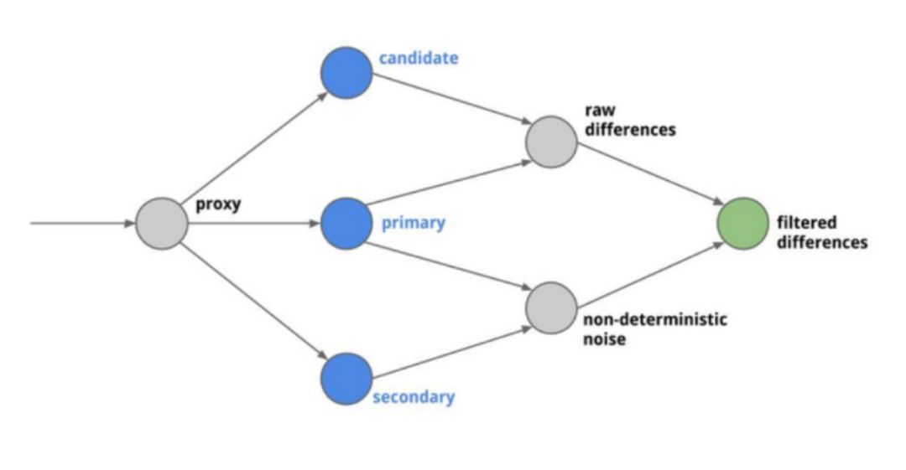

录制回放AB测试
AB Test
控制变量法，同样的输入，经过不同版本的代码运行，得到不同的结果。结果之间的差异就代表了这两个不同版本代码的差异，这就是对代码的AB Test
业界对这种做法的一个开源实现是twitter的Diffy

Diffy会把你的输入复制并发送给三个服务。其中primary和secondry应该部署相同的，已知是好的代码版本，作为基线。candidate就是你想要发布/测试的新版本代码。通过对primary和secondry的结果对比，找到响应中和代码无关的噪音，在和candidate对比的时候去除这些噪音，就可以得到代码的真实差距。
录制回放
AB Test的优点
- 原理简单
- 不需要深入理解代码实现
AB Test的缺点
- 对比AB版本的代码差异过大，会导致生成diff结果差异也过大，难以人工观察哪些diff是正确的
- AB版本内部业务逻辑变化过大，生成的diff自然也会很大，难以人工观察正确性
- 需要保证两个服务看到相同的环境数据
- 仅适合幂等性的请求，如果两个一模一样的请求，产生的结果都不一致，那就不应该使用AB test进行测试
录制变通
what if 在同一个环境里没办法启动两个相同服务的不同版本？
用空间换时间，先把A服务的响应录制成文件，把服务部署成B版本，发送请求和A服务之前录制的响应做对比。